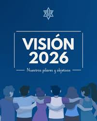

NUESTRA VISIÓN
VISIÓN

- La visión de las elecciones peruanas se enfoca en la modernización tecnológica y la confianza pública.
- JNE: Busca ser un organismo transparente, eficiente y moderno.
- ONPE: Aspira a ser líder en procesos electorales con innovación tecnológica.
- RENIEC: Garantiza un padrón electoral confiable y seguro.
- Integridad de la información y lucha contra noticias falsas.
- Participación inclusiva de todos los ciudadanos.
- Seguridad jurídica y estabilidad democrática.